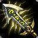

Yasuo "Der entehrte Krieger"

Informationen über Yasuo
Yasuo ist ein Starker, aber schwer zu erlernender Champion. Seine Anfangsphase ist nicht so stark, deshalb konzentriert er sich am Anfang eher aus Farmen und Poken. Weil er keine Ressourcen benötigt, kann er seine Fähigeiten auch gut zum Farmen benutzen. Ab Level 6 bekommt er durch seine Ultimative Fähigkeit seine wahre Stärke, weil er durch die dritte Aktivierung von "Stahlsturm" einen Wirbelsturm auslösen kann, womit er in der Lage ist seine Ultimative Fähigkeit zu aktivieren. Durch das aktivieren der Fähigkeit springt er zu seinem Gegner, der vom Wirbelsturm getroffen wurde und macht hohen Schaden und bekommt für kurze Zeit einen Prozentualen Wert an Rüstungsdurchdringung.
Vorallem im späteren Verlauf des Spiels wird Yasuo sehr stark. Mit seinem Items und seiner Passiven bekommt er eine kritische Trefferchance von 90% oder mehr. Somit ist so gut wie jeder automatische Angriff ein kritischer Treffer. Yasuo braucht im Späteren Verlauf nicht viele Angriffe und Fähigkeiten um einen Gegner zu töten, vorallem Rollen wie ADC und Mid sind für ihn ein leichtes Ziel. Auch für Tanks braucht Yasuo nicht lange um sie zu besiegen.
Es ist Hilfreich wenn man wartet bis Yasuo sein Wirbelwind raus hat, dann fehlt ihn viel Schaden und man kann ihn in der Zeit leichter besiegen. Es ist auch wichtig ihn in den Teamfights zu Fokusen, weil er in kurzer Zeit sehr viel Schaden verursachen kann. Hilfreich ist es auch ihn zu Stunnen oder zu Silencen, dann ist er auch ein leichtes Ziel.
Was macht Yasuo so stark?
Der Grund warum Yasuo so stark ist ist einerseits der, dass er sehr mobil ist. Er kann mit seiner E-Fähigkeit "Sausende Klinge" an gegner und Vasallen springen, wenn man es sehr gut beherscht kann man mit der Fähigkeit auch durch Wände springen. Diese Fähigkeit hat sehr wenig Abklingzeit (0.1 Sekunde wenn sie vollgeskillt ist), aber kann am selben Ziel erst wieder nach einer bestimmten Zeit eingesetzt werden.
Ein anderer Grund ist seine sehr hohe Chance auf kritische Treffer. Im späteren Verlauf des Spiels hat er meistens eine kritische Trefferchance von ungefähr 90% und macht deshalb bei so gut wie jedem automatischen Angriff einen kritischen Treffer. Deshalb ist auch der Schaden der ausgeteilt wird durchgehend hoch.
Er hat auch allgemein auf seine ganzen Fähigkeiten sehr wenig Abklingzeit und hat deshalb seine Fähigkeiten immer bereit, und hat immer einen konstanten Schaden. Deshalb hat er auch keine Probleme gegen jede Art von Champion anzukommen.
Wichtige Items auf Yasuo
-
 Statikk Shiv
Statikk Shiv - Infinite Edge
-
 The Bloodthirster
The Bloodthirster - Guardians Angel
-
 Berserker's Greaves
Berserker's Greaves -
 Blade of the Ruinde King
Blade of the Ruinde King